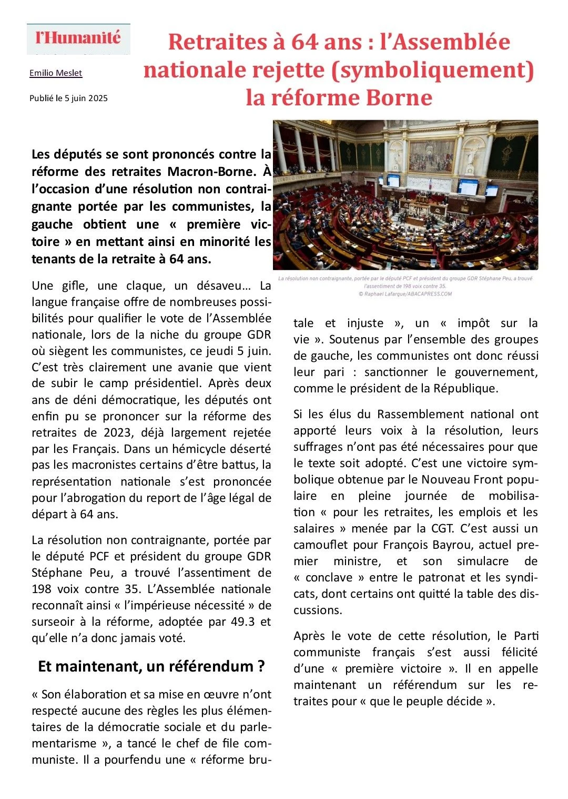

Revue de presse
Retraites à 64 ans. L’Assemblée adopte une résolution contre la réforme
Date indiquée par Facebook · 5 juin 2025
Repères éditoriaux
Nous avons relayé l’article de L’Humanité du 5 juin 2025. Il précise la portée du vote sur la résolution portée par les députés communistes. La résolution s’oppose à la retraite à 64 ans et le journal rappelle son caractère non contraignant.

Sources
Archive rouge · document diffusé sur Facebook · AR-0002-FB-01101
À lire aussi · « Vérité sur les salaires » : des responsables communistes et des travailleurs reçus à Matignon - Vidéo Dailymotion